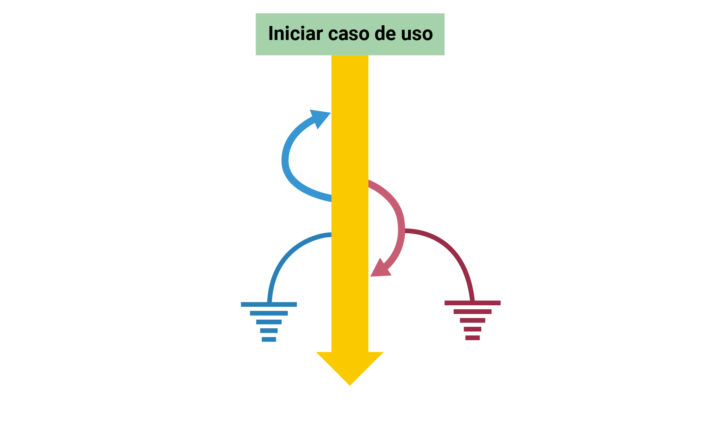

Etapas ou ciclos de testes
Planejamento
O planejamento, ou plano de teste, é um documento que especifica, principalmente:
- o objetivo do teste;
- o escopo do sistema e os requisitos que deverão ser avaliados;
- os elementos que serão testados e quais dados serão monitorados durante a execução do teste;
- o cronograma de atividades;
- a técnica que será utilizada (funcional, estrutural etc.);
- os recursos que serão utilizados (tipo de software);
- o responsável pelo monitoramento dos dados de erros, pelo recebimento dos dados coletados e pela correção de erros;
- as referências às normas aplicadas ao teste e a outros documentos associados ao projeto.
Elaboração do caso de teste
Trata-se do documento que define as unidades que serão testadas, incluindo dados de entrada, resultados, ações e condições gerais para a execução do teste, ou seja, responde à pergunta: o que será testado? A resposta poderia ser caso de teste 1: efetuar login.
Execução do programa
Nessa etapa, executa-se o programa ou o código utilizando os atributos do HTML, como class, id, title, text, de acordo com o plano de teste e com os casos de testes elaborados, objetivando identificar os elementos da página e simular as interações do usuário. É por meio dessa interação que é possível obter os resultados e a coleta de erros.
Avaliação/Resultado
Nessa etapa, a equipe de desenvolvimento avaliará o erro, buscando compreender o que o ocasionou, por exemplo erro de sistema, de código, de internet, de hardware, para, assim, corrigi-lo.